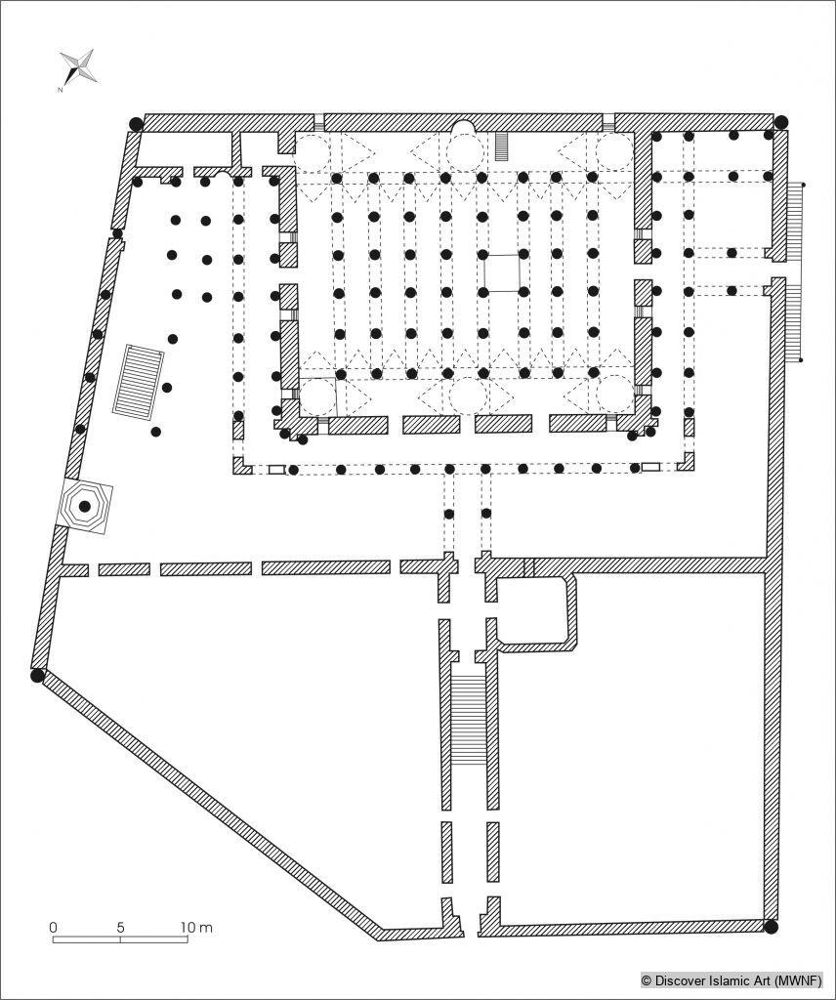

소개
튀니스 메디나 북쪽의 할파윈 광장을 굽어보는 이 19세기 초 모스크는 프랑스 보호령 이전에 튀니스에 세워진 마지막 대모스크이다. 이탈리아산 대리석 기둥과 벽 덕분에 유럽의 영향이 가장 뚜렷한 튀니지의 예배소가 되었다.
사진



역사
모스크의 이름은 유세프 사히브 엣타바아에서 왔다. 그는 1765년경 몰다비아에서 태어나 어린 시절 노예가 되었고, 1781년 하무다 파샤 왕자를 섬기게 되었으며, 1782년 그의 옥새 관리관(사히브 엣타바아), 이어서 수석 대신이 되었다. 그는 1808년부터 1814년까지 건축 장인 하즈 사시 이븐 프리자의 지휘로 모스크를 짓고 1814년에 봉헌했다. 1814년 9월 바르도에서 습격을 받아 다친 뒤 1815년 1월에 세상을 떠났고, 그 때문에 미나레트는 1970년대까지 미완성으로 남았다.
건축
상점과 창고 위에, 카르타고 유적에서 가져온 다듬은 돌로 기단을 쌓아 지은 이 모스크는 광장을 내려다본다. 꺾인 계단이 동쪽 회랑으로 이어지며, 회랑에는 두 줄의 열주가 있고 다섯 개의 아치로 광장을 향해 열려 있다. 팔각형 미나레트는 그 끝에 서 있다. 세 개의 회랑이 9개의 신랑과 7개의 베이로 이루어진 예배실을 감싸며, 예배실은 원통 볼트로 덮여 있다. 키블라 벽과 맞은편 벽을 따라 놓인 양 끝의 베이에는 각각 가운데 하나, 양 모서리에 하나씩 모두 세 개의 돔이 있다.
자세히
가상 박물관 Discover Islamic Art의 항목에 따르면, 이처럼 뚜렷한 서양의 영향을 보여 주는 튀니지 예배소는 달리 없다. 다른 곳보다 많이 쓰인 대리석은 이탈리아 카라라에서 직접 들여왔다. 가늘고 홈이 파인 기둥에는 혼합식 기둥머리가 얹혀 있는데, 이는 튀르크 시대 튀니지 양식을 이탈리아식으로 해석한 것이다. 말발굽 모양이 거의 사라진 아치는 고전적인 말발굽형에서 벗어났고, 상인방에는 신바로크풍 부조가 새겨져 있다. 타일은 벽 윗부분에만 남아 있다. 여러 색 대리석으로 만든 미흐라브와 고정 민바르는 유사 고딕풍 아케이드에 꽃무늬와 금박 장식을 어우른다. 동쪽 회랑에는 더운 날 예배를 위한 바깥 미흐라브가 있다.
역할과 영향
모스크는 대신이 할파윈 지역을 위해 세운 큰 복합 단지의 중심이었다. 두 개의 마드라사, 수크, 함맘, 공공 음수대(사빌), 푼두크, 그의 궁전과 묘가 있으며, 묘는 마드라사처럼 북쪽 정면으로 들어간다.
주요 연대
- 1808대신 유세프 사히브 엣타바아가 공사를 시작함
- 1814창건자가 모스크를 봉헌함
- 1815전년에 바르도에서 다친 창건자의 죽음
- 1970미나레트가 마침내 꼭대기 등탑을 갖춤(1970년대)
방문 안내
이곳은 무엇보다 예배의 장소입니다. 단정한 차림으로 오시고, 예배실에 들어갈 때는 신발을 벗으며, 예배 시간은 피해 주세요. 여러 대모스크에서 비무슬림 방문객은 안뜰까지만 들어갈 수 있고 예배실에는 들어갈 수 없습니다. 개방 시간은 바뀔 수 있으니 현장에서 확인하세요.
지도에서
자료와 링크
출처
- 이 글은 위 자료(위키백과, Qantara, Discover Islamic Art, 유네스코)를 바탕으로 Mosquées en Tunisie가 작성했으며, 2026년 10월 9일에 확인했습니다.
- Wikidata : Q3324882 (CC0)
- 사진: 위키미디어 공용. 작가와 라이선스는 각 사진 아래에 있습니다.
- ‘자세히’ 부분과 Discover Islamic Art 표시 사진: Museum With No Frontiers(MWNF)의 허락을 받아 수록.
- 위치: OpenStreetMap(ODbL) 및 Wikidata.